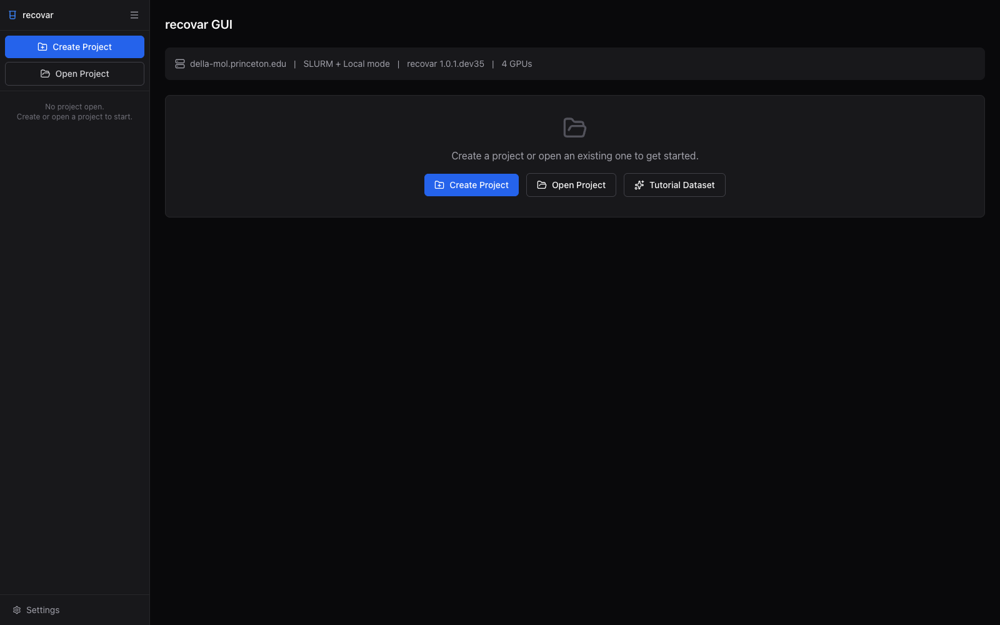
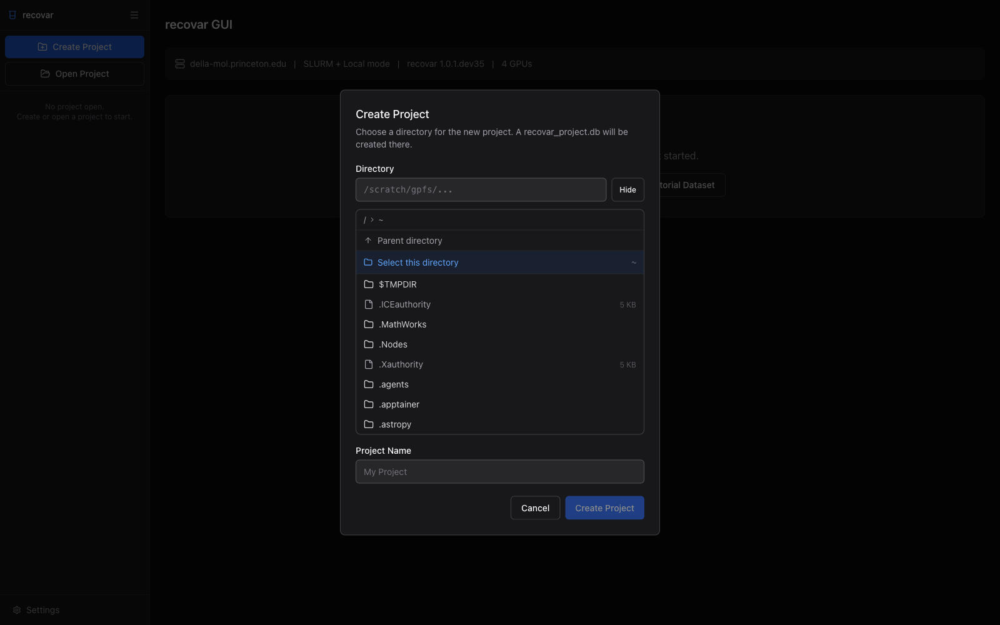
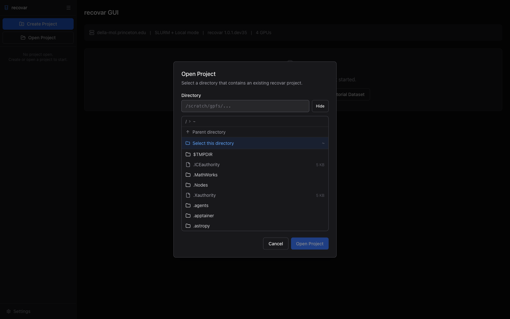
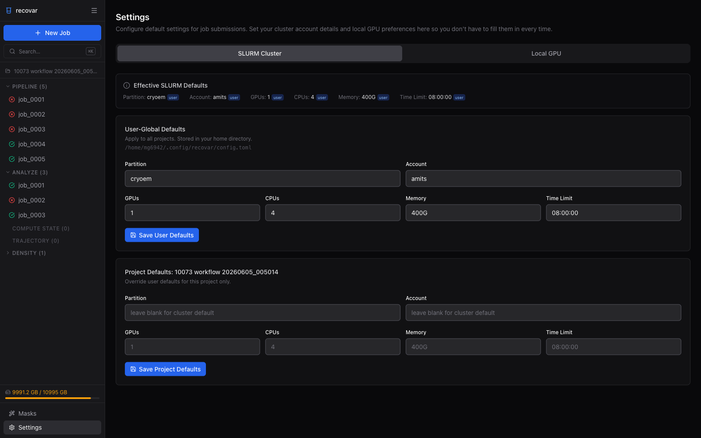
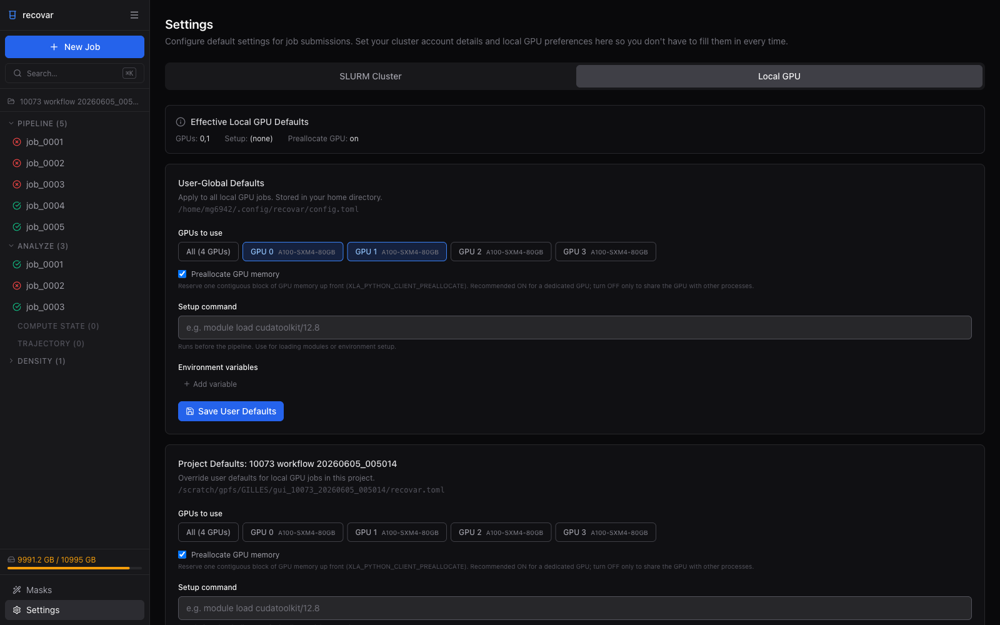
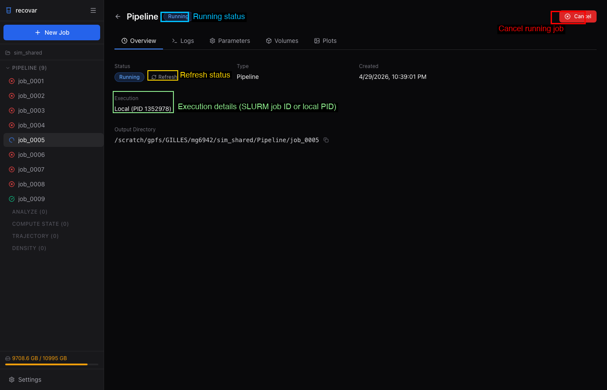
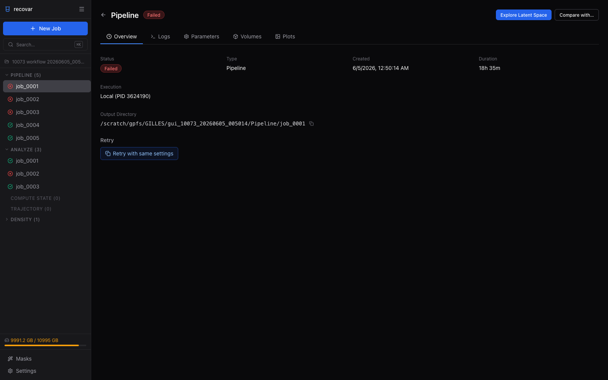
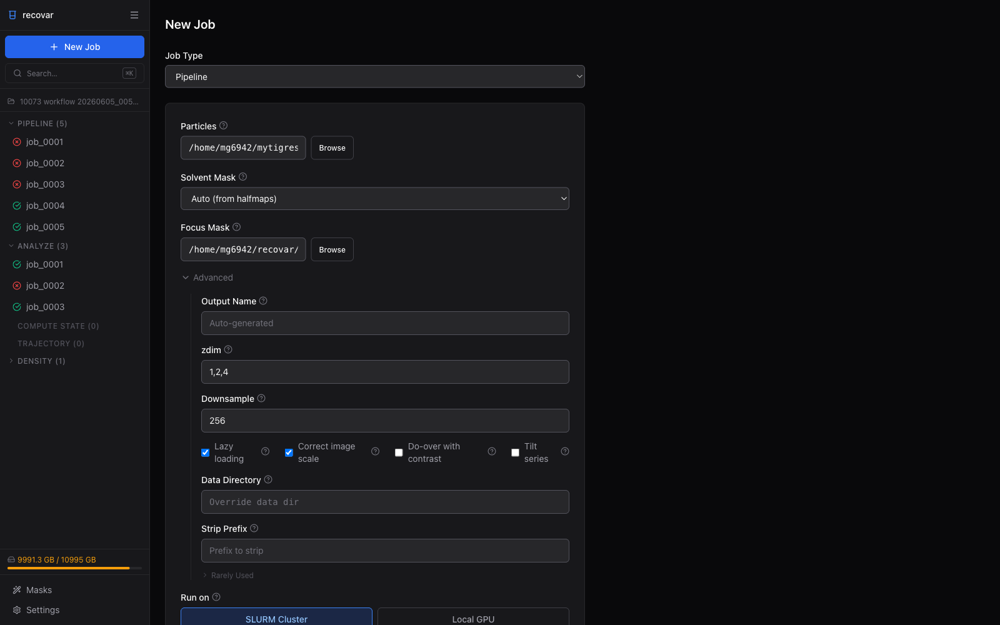

Web GUI¶
RECOVAR includes a browser-based GUI for launching jobs, exploring latent spaces interactively, and viewing 3D volumes -- all without writing commands.
Launching the GUI¶
This starts a local web server (default: http://localhost:8080) and opens it in your default browser. Pass --no-browser to skip that (handy over SSH).
Options¶
| Flag | Default | Description |
|---|---|---|
--port |
8080 | Port to bind to (auto-advances to the next free port if it is taken) |
--host |
127.0.0.1 | Host to bind to (0.0.0.0 for remote access) |
--no-browser |
False | Don't auto-open a browser — use this for remote/SSH sessions |
--check |
False | Print a readiness report (dependencies, GPUs) and exit |
--reload |
False | Auto-reload for development |
Remote access via SSH¶
When your data lives on a remote cluster and you want to view the GUI in a browser on your laptop, set up an SSH tunnel:
# Step 1: On your LOCAL machine, open an SSH tunnel:
ssh -L 8080:localhost:8080 user@cluster
# Step 2: On the CLUSTER (inside the SSH session), launch the GUI:
recovar gui
# Step 3: Open http://localhost:8080 in your local browser
The tunnel forwards traffic so the remote server appears local. If port 8080 is taken, use a different port in both the SSH command and recovar gui --port <port>.
Getting Started¶
First Launch¶
When you first open the GUI, you will see the initial dashboard with no project loaded. The empty state offers three actions: Create Project, Open Project, and Tutorial Dataset -- the last one generates a small example dataset and opens it as a project, a zero-setup way to try the interface. The system info bar at the top shows the hostname, execution mode (Local mode, SLURM mode, or SLURM + Local mode), the recovar version, and available GPUs.

Creating a Project¶
Click Create Project in the sidebar or in the main content area. A dialog opens with a built-in file browser that lets you navigate the filesystem.

To create a project:
- Navigate to the directory where you want the project.
- Click Select this directory to confirm the location.
- Name your project in the Project Name field.
- Click the blue Create Project button.
The GUI creates a recovar_project.db SQLite file in that directory.
Opening an Existing Project¶
Click Open Project to open a directory that already contains a recovar project.

Dashboard¶
Once a project is open, the dashboard shows a complete overview of your work.

Key areas:
- Sidebar job tree (left) -- all jobs organized by type with color-coded status icons
- Search (⌘K / Ctrl+K) -- a command palette to jump to any job, mask, or action
- Job count cards -- quick summary of total jobs and counts per type
- Run Pipeline / Scan for Jobs -- start a new pipeline job or import existing CLI outputs
- Recent Jobs -- chronological list with status badges
- Masks (bottom-left) -- the project's mask library (see Masks)
- Disk usage (bottom-left) -- filesystem usage monitor
- Settings (bottom-left) -- configure SLURM and local execution defaults
Settings¶
The Settings page (gear icon at the bottom of the sidebar) lets you configure default values for SLURM and local GPU execution. These defaults are pre-filled into every new job form.
SLURM Cluster Tab¶

Three sections with cascading priority:
- Effective SLURM Defaults -- Summary bar showing current values with provenance badges ("user", "project", or "built-in")
- User-Global Defaults -- Settings for all projects, stored in
~/.config/recovar/config.toml - Project Defaults -- Per-project overrides, stored in
<project_dir>/recovar.toml
Local GPU Tab¶

Same layered structure with GPU-specific options:
- GPU picker buttons -- Select which GPUs to use (sets
CUDA_VISIBLE_DEVICES) - Setup command -- Shell command run before every local job (e.g.,
module load cudatoolkit/12.8) - Environment variables -- Extra environment variables for jobs
Submitting Jobs¶
Click + New Job in the sidebar or the dashboard. Each job type has its own form. For detailed screenshots and field descriptions, see the relevant guide page:
- Pipeline -- See Running the Pipeline
- Analyze -- See Analyzing Results
- Downsample -- See Downsampling
- Density Estimation -- See Conformational Density
- Compute State -- Generate a 3D volume at a specific latent coordinate
- Compute Trajectory -- Generate volumes along a path between two latent points
- Stable States -- Find local maxima of the conformational density
- Postprocess -- Sharpen and filter volumes
Each form includes an executor toggle (SLURM Cluster or Local GPU) with configurable resource settings.
Job Detail Page¶
Click any job in the sidebar to view its details. The job detail page has multiple tabs:
- Overview -- Status, duration, execution details, output directory, suggested next steps, and quick preview plots
- Logs -- Full job output with color-coded messages and real-time streaming for running jobs
- Parameters -- All parameters used, with Show CLI Command and Clone Job buttons
- Volumes -- Output volumes organized by category, with a built-in 3D isosurface viewer
- Plots -- All diagnostic plots in a grid (click to view full resolution)
Completed job:

Running job:

Failed job:

Clone Job Flow¶
From the Parameters tab of any job, click Clone Job to open a new form with all parameters pre-filled. Modify what you need and resubmit.

Exploring Results¶
Latent Space Explorer¶
After running an Analyze job, click Explore Latent Space to open the interactive explorer. The PCA and UMAP projections sit side by side; color the particles by k-means cluster to see how the conformational landscape breaks apart.

- PCA and UMAP projections side by side (handles hundreds of thousands of particles; very large datasets are automatically subsampled for smooth display)
- Color by k-means cluster, point density, or deconvolved conformational density
- Click a particle or k-means center to see its coordinates and generate a volume on the fly
- Lasso / rectangle / polygon selection to pick particles and export a
.staror.indsubset (see Extracting Subsets)
3D Volume Viewer¶
View isosurface renderings of any volume directly in the browser. Adjust the Contour (σ) threshold and Opacity, switch between 3D and Slice views, and choose a render Resolution (Auto / 256 / 128 / 64 / Full) for faster interaction over slow connections. Use the Pin button next to any volume to overlay up to four volumes in one scene and compare them.
Masks¶
Click Masks at the bottom of the sidebar to open the project's mask library. From there you can review every mask and combine masks with boolean operations (union, intersect, subtract). To create a new one, click the green wand icon on any volume in a job's Volumes tab to launch the interactive Mask Wizard -- a guided tool for drawing a solvent or focus mask with live threshold, dilation, and soft-edge previews. See Masks for the full workflow.
GUI vs CLI Workflow¶
The GUI mirrors the CLI workflow, adding interactivity:
| CLI step | GUI equivalent |
|---|---|
recovar pipeline ... |
New Job -> Pipeline form |
recovar analyze ... |
New Job -> Analyze form (or click "Suggested Next Step") |
recovar compute_state ... |
Click a point in the latent space explorer, or New Job -> Compute State form |
recovar compute_trajectory ... |
Select two points in the latent space explorer, or New Job -> Trajectory form |
View .mrc in ChimeraX |
Built-in 3D volume viewer and slice viewer |
Inspect .png plots |
Plots tab on the job detail page |
recovar estimate_conformational_density ... |
New Job -> Density Estimation form |
Use both
The GUI and CLI work on the same output directories. You can run pipeline and analyze from the command line, then launch recovar gui and scan the directory to explore the results interactively. Or do everything through the GUI.
Jobs Survive GUI Restarts¶
Jobs submitted through the GUI are tracked in the project database. SLURM jobs run on the cluster independently of the GUI, so they keep going if the server restarts and are picked back up automatically. Local GPU jobs run as child processes of the server: the GUI reconciles their final status (completed or failed) when it restarts, but a local job that was still running when the server was killed will not resume.
Requirements¶
The GUI requires FastAPI, uvicorn, SQLAlchemy, and a few other packages, which are all included when you install with:
This installs the gui extra, which includes fastapi, uvicorn, python-multipart, sqlalchemy, aiosqlite, aiofiles, jinja2, and tomli_w (for writing TOML settings files).
The frontend is pre-built and bundled -- no Node.js required at runtime.